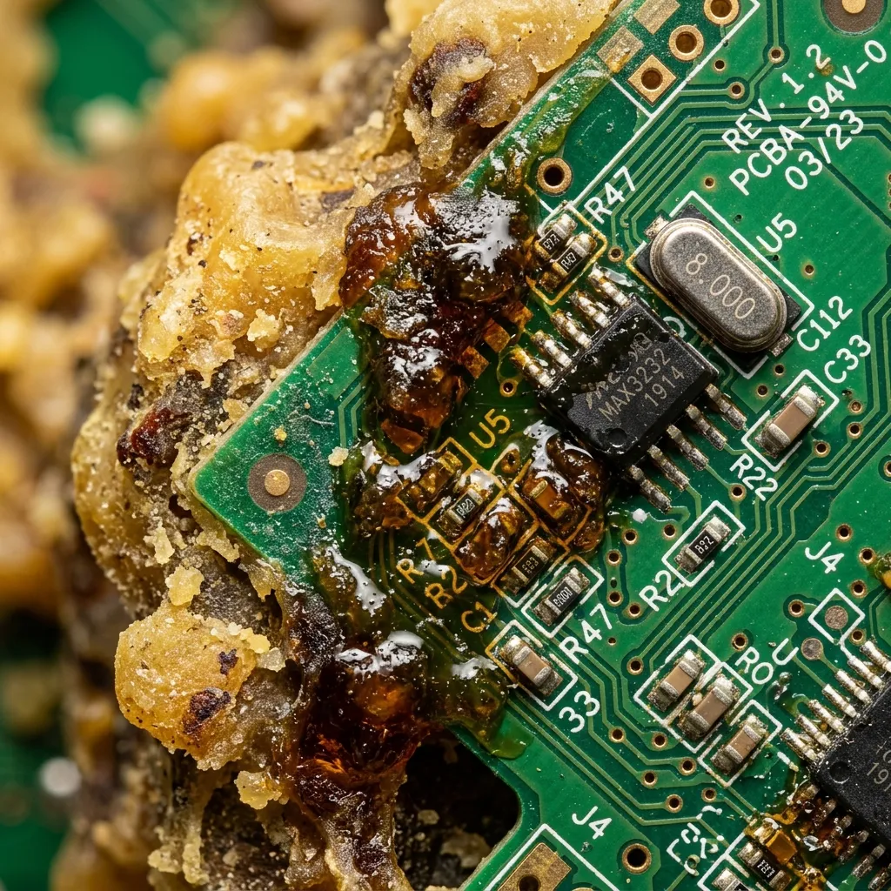
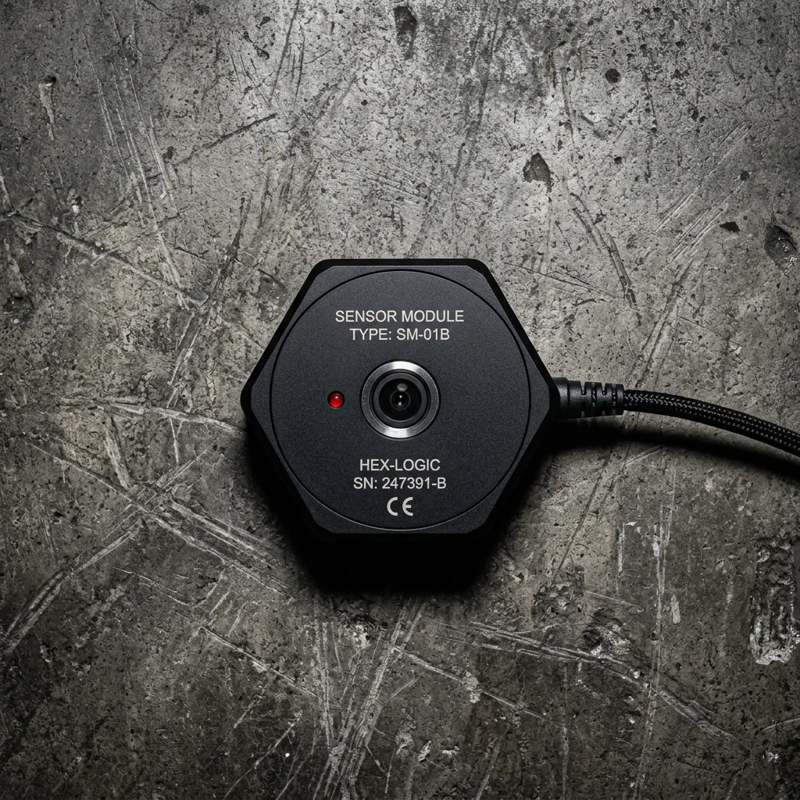
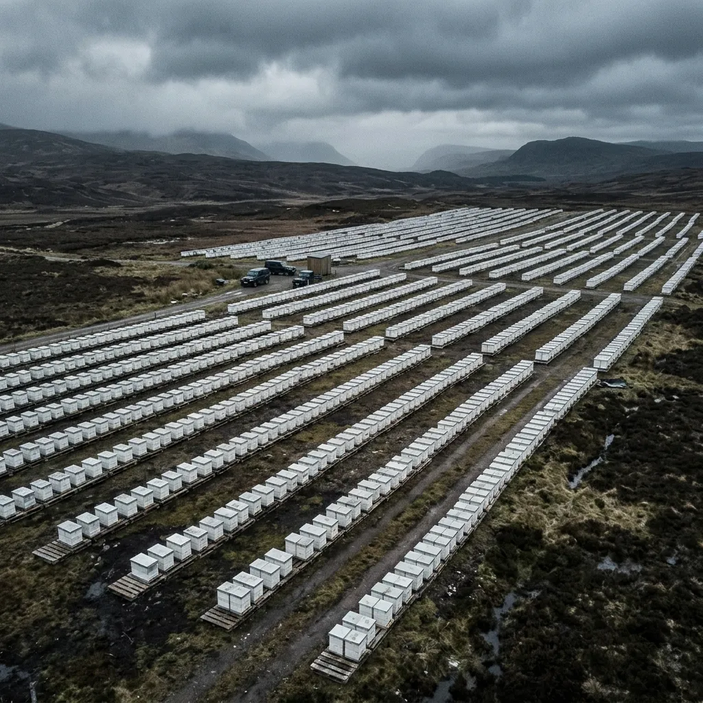

Apiary Mesh Kinetics
Deterministic Hive Telemetry & Acoustic Anomaly Detection.
Ultra-low-power RF mesh networks engineered exclusively for commercial pollination fleets and large-scale apiaries.
Commercial apiculture relies heavily on anecdotal observation and invasive hive inspections that disrupt colony thermoregulation. Apiary Mesh Kinetics replaces visual guesswork with continuous acoustic and thermodynamic telemetry. By deploying our non-invasive Hex-Node hardware across thousands of hives, pollination fleet managers gain immediate, empirical data on queen health, varroa mite density, and imminent swarm events. We deliver actionable entomological data over low-bandwidth LoRaWAN networks, ensuring total colony visibility without breaking the propolis seal.
Access Raw Data Logs
Acoustic Anomaly Detection: Decoding Colony Frequencies
A commercial honey bee colony operates as a complex acoustic environment, generating distinct frequency signatures that correlate directly with physiological states. Standard agricultural IoT focuses purely on weight and temperature. Apiary Mesh Kinetics prioritises high-fidelity acoustic sampling, capturing the internal micro-vibrations of the brood nest.
When a colony prepares to swarm, or when varroa mite loads cross critical thresholds, the collective wing-beat frequency shifts predictably from the standard 250 Hz baseline. Our Hex-Node units sample these acoustic profiles every four hours, utilising onboard edge-processing to run Fast Fourier Transforms before transmitting a compressed diagnostic payload over the mesh network. This allows commercial operators in the Scottish highlands or vast contract orchards to detect queenlessness or parasitic stress weeks before physical symptoms manifest, drastically reducing winter loss rates through preemptive, data-driven intervention.
Hex-Node Hardware Specifications
The Hex-Node acoustic module is engineered to operate autonomously within the harsh internal environment of a commercial hive. Measuring precisely 90mm by 15mm, the low-profile unit mounts seamlessly beneath the crown board, avoiding interference with standard frames. An IP67-rated, industrial resin-sealed casing ensures total protection against propolis accumulation, atmospheric moisture, and aggressive formic acid treatments used in mite management.
Power efficiency is paramount. The unit draws minimal current, yielding a guaranteed three-year operational lifespan from a single, field-replaceable CR2450 coin cell battery. This extended duration eliminates the need for mid-season maintenance, allowing fleet managers to deploy hardware and focus entirely on the telemetry.
The core of the Hex-Node is its onboard Fast Fourier Transform (FFT) audio processor. Instead of transmitting raw audio, the module calculates frequency spectrums locally. This edge-processing architecture radically reduces payload sizes, enabling rapid transmission over low-bandwidth networks whilst preserving the high-fidelity acoustic signatures required for accurate biological diagnostics.

LoRaWAN Mesh Topology
Agricultural environments rarely offer reliable cellular connectivity. Apiary Mesh Kinetics bypasses traditional networks entirely through a proprietary, low-power LoRaWAN mesh topology. Each Hex-Node communicates using sub-GHz radio frequencies, specifically calibrated to penetrate dense orchard canopies and thick wooden hive structures without signal degradation.
Data is transmitted to centrally located, solar-powered gateways positioned at the edge of the apiary or farm. These gateways boast a formidable fifteen-kilometre line-of-sight reception range, ensuring that even the most remote contract pollination sites remain fully monitored. Because the Hex-Node processes audio into numerical metrics onboard, the resulting transmission payload is strictly compressed to under fifty bytes. This micro-packet strategy allows a single gateway to support thousands of concurrent sensor nodes without experiencing network congestion. Fleet operators receive continuous updates on colony metrics regardless of local infrastructure, maintaining an unbroken stream of empirical data from isolated rural deployments directly to the primary monitoring dashboard.
Empirical Pathogen & Swarm Metrics
The value of continuous acoustic telemetry lies in its predictive capacity. By isolating specific frequency anomalies, Apiary Mesh Kinetics transitions commercial apiary management from reactive observation to proactive intervention. Our algorithms parse the acoustic baseline of healthy thermoregulation, immediately identifying deviations associated with stress.
94% accuracy in pre-swarm acoustic spikes detected twelve days prior to the event.
This singular metric redefines swarm management, allowing syndicates to allocate resources efficiently rather than relying on scheduled, invasive inspections. Furthermore, the system achieves an 88% accuracy rate in detecting late-stage Varroa destructor parasitism. As mite loads increase, the collective agitation frequency of the colony shifts. The Hex-Node captures this precise acoustic marker long before visual symptoms appear on the brood. Additionally, the sudden absence of queen pheromones triggers a distinct auditory response; our network identifies queenlessness within forty-eight hours. This empirical approach drastically minimises winter losses and secures the commercial viability of large-scale pollination contracts.

Commercial Fleet Deployment
Deploying sensory hardware across thousands of hives demands absolute operational efficiency. The Hex-Node is designed for drop-and-forget installation. Technicians simply mount the module to the inner cover or crown board using the integrated high-tack adhesive or mounting brackets. This process takes less than thirty seconds per hive and does not disturb the critical propolis seal.
To facilitate massive syndicate rollouts, we utilise bulk MAC address provisioning via Near-Field Communication (NFC). Field workers can activate and assign hundreds of units sequentially using a standard mobile device, instantly registering each node to its specific apiary location.
Once deployed, the data flows seamlessly into enterprise systems. Apiary Mesh Kinetics provides comprehensive API integration, allowing direct ingestion of acoustic and thermodynamic metrics into existing agricultural Enterprise Resource Planning (ERP) software. This ensures that fleet managers can orchestrate logistics, schedule feeding, and direct veterinary interventions from a unified, data-driven command centre.
Technical & Biological FAQ
Does sub-GHz RF transmission interfere with honey bee navigation?
No. Extensive entomological field trials confirm that our specific LoRaWAN frequencies have zero impact on the colony’s magnetic orientation or waggle dance communication. The transmission bursts are exceptionally brief, consuming milliseconds, and operate entirely outside the biological sensory spectrum of Apis mellifera.
How do we clean propolis accumulation off the sensor modules?
The IP67 resin-sealed casing is highly resistant to natural resins. Routine maintenance requires only a standard hive tool to scrape the surface. The acoustic microphone is protected by a recessed, hydrophobic mesh that repels propolis whilst maintaining optimal auditory sensitivity during the active foraging season.
What is the battery performance during extreme cold weather?
The CR2450 coin cell is industrial-grade, rated for sustained operation down to minus twenty degrees Celsius. Even in severe Scottish winters, the Hex-Node maintains its four-hour sampling interval. The internal thermoregulation of a wintering cluster also provides ambient baseline heat, further stabilising voltage output.
Can agricultural researchers request direct API access?
Yes. We offer dedicated, rate-limited API endpoints for academic institutions and agricultural entomologists. Researchers can query anonymised, aggregated FFT data across our network to study regional pathogen trends, phenology shifts, and the long-term impact of climatic variables on commercial pollination efficiency.
What is the expected lifespan of the physical hardware?
Excluding the replaceable battery, the solid-state architecture and resin potting give the Hex-Node an expected operational lifespan exceeding ten years. The casing withstands repeated exposure to formic acid, oxalic acid vaporisation, and the highly humid, acidic environment of a sealed brood nest.
What are your warranty terms for commercial syndicates?
We provide a standard three-year replacement warranty on all Hex-Node modules and solar gateways, covering any failures related to manufacturing defects or environmental ingress. Defective units are swapped rapidly via our Perth engineering office to ensure your telemetry network remains unbroken.
Hardware Tender & Procurement
Apiary Mesh Kinetics provisions hardware exclusively for commercial pollination fleets and large-scale agricultural syndicates. Due to the industrial nature of our manufacturing and network provisioning process, we enforce a strict minimum order quantity of five hundred Hex-Node units per contract.
Lead times for custom solar gateway configuration and bulk NFC provisioning currently stand at six to eight weeks from the date of final tender approval. We strongly advise initiating procurement ahead of the primary foraging season to ensure the network is fully operational before the first spring flows.
For technical consultations, API documentation, and formal pricing structures, direct all correspondence to our engineering office located in Perth, Scotland. Our team will evaluate your apiary topology and calculate the exact gateway requirements.
Submit Fleet Tender Specification